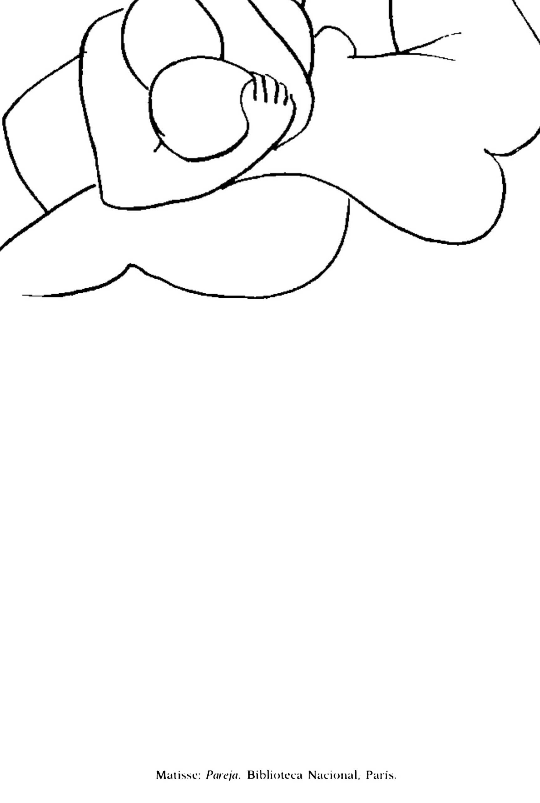

Lágrimas de Eros · Obra 85 de 124
Pareja
Henri Matisse

Dibujo a línea de dos cuerpos abrazados que Bataille reproduce con la indicación «Bibliothèque Nationale». No se ha podido identificar la hoja concreta ni su signatura. Con él empieza la parte del libro dedicada a la pintura de su tiempo, que Bataille llama «manierismo»: «la búsqueda de la fiebre».
Lo que hace que destaque
Dibujo a línea de dos cuerpos abrazados que Bataille reproduce con la indicación «Bibliothèque Nationale». No se ha podido identificar la hoja concreta ni su signatura. Con él empieza la parte del libro dedicada a la pintura de su tiempo, que Bataille llama «manierismo»: «la búsqueda de la fiebre».
Contexto histórico
Sin identificar: la nota del lote apunta a un estudio para el «Florilège des Amours» de Ronsard (1948), pero no se ha podido cotejar con el catálogo de la BnF ni con Gallica. La definición del manierismo está en el texto de las pp. 160-161, no en un comentario de la lámina.
Autoría y procedencia
Henri Matisse (1869-1954), pintor, dibujante y escultor francés, fue la figura central del fauvismo y uno de los grandes maestros del arte del siglo XX.
En los libros
Las lágrimas de Eros, de Georges Bataille · Lámina de la p. 160
Ficha pendiente de contrastar con fuentes académicas.